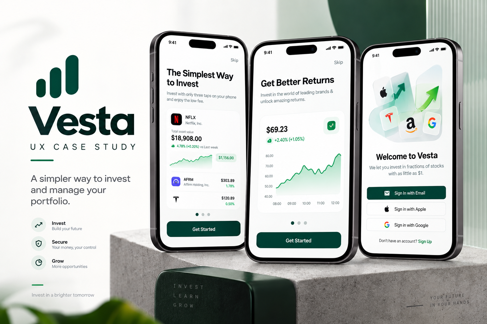
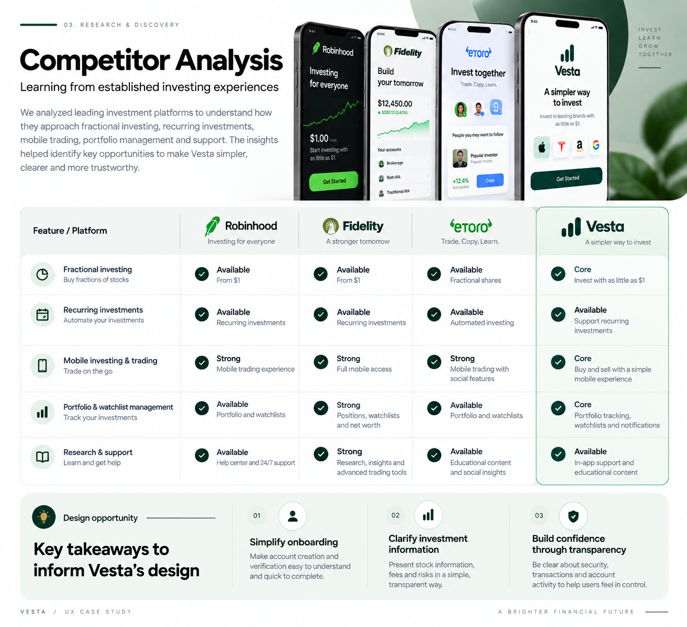
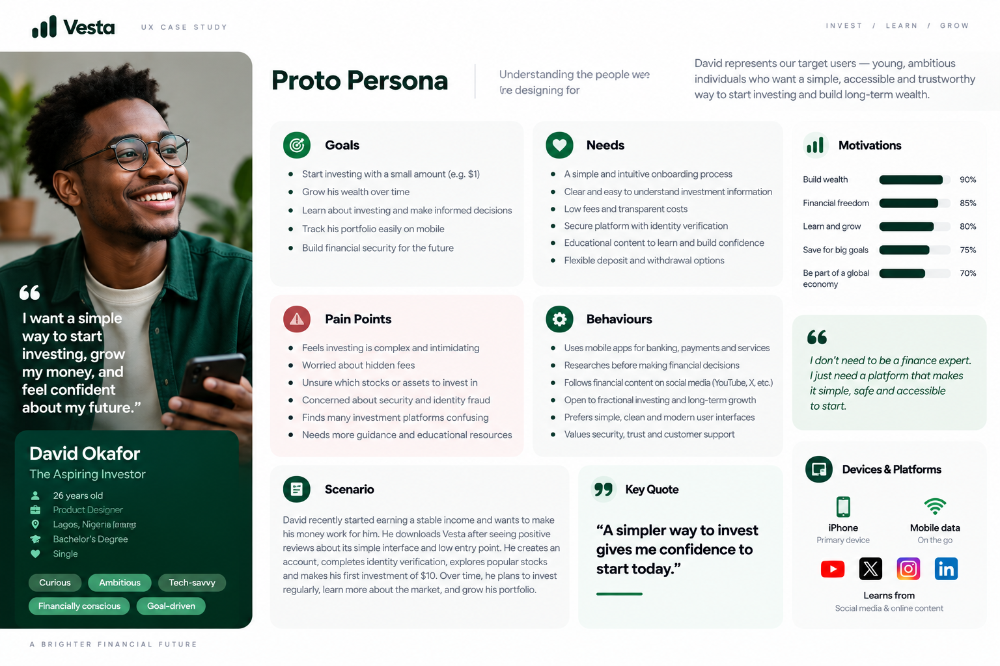
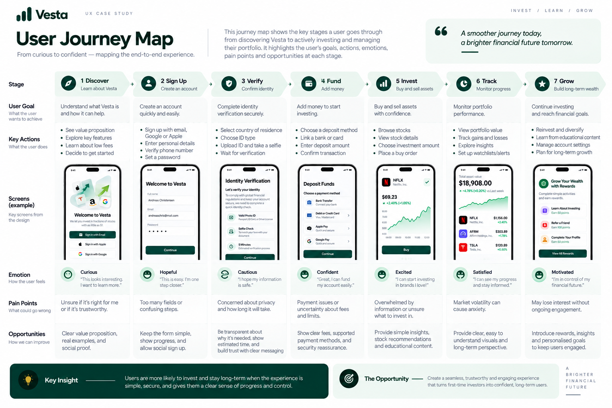
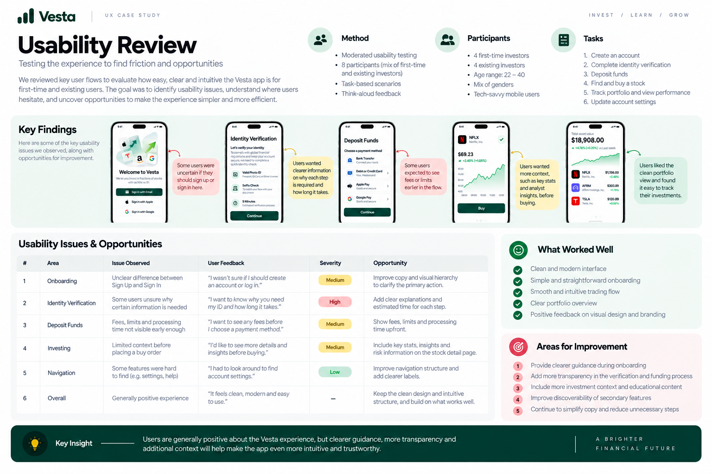
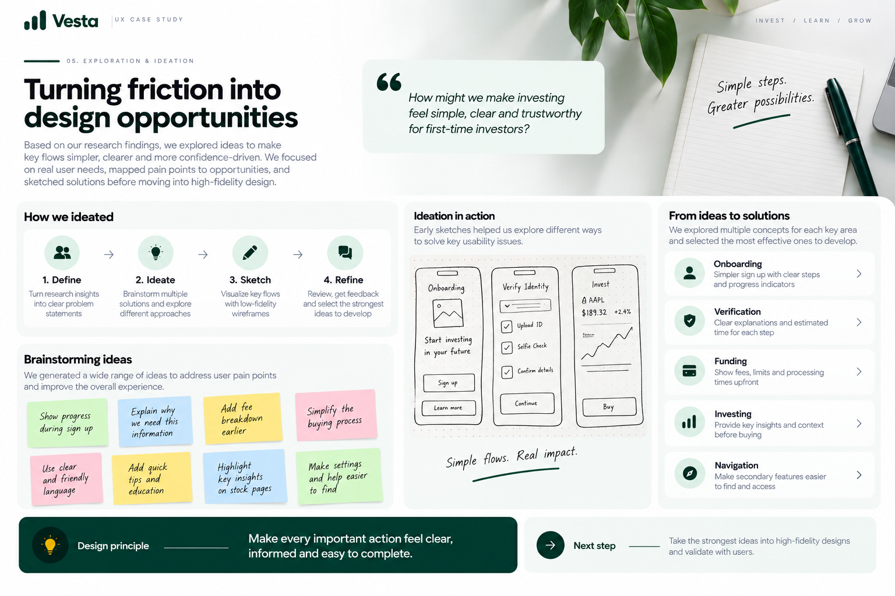

A simpler way to invest and manage your portfolio

Vesta is a mobile investment experience designed to make investing easier to understand, start, and manage.
I worked across the core product journey, from account creation and identity verification to funding, stock discovery, trading, portfolio management, and account support.
The design challenge was not simply to fit financial features into a mobile app. It was to create a product experience that makes complex financial actions feel clear, structured, and trustworthy.
Making investing feel simpler and more accessible
Investing introduces users to unfamiliar processes, financial terminology, verification requirements, funding decisions, and market information.
Vesta brings these experiences into one product, creating a broader UX challenge: how do you make a financially complex product feel simple without hiding the information users need to make informed decisions?
The resulting experience connects onboarding, KYC, funding, trading, portfolio management, and account support into one continuous mobile journey.
Understanding the investment journey
Rather than looking at individual screens in isolation, I mapped the product as an end-to-end financial journey.
The designs revealed five major experience areas:
This mapping revealed the core opportunity: Make a complex investment journey feel clear, connected, and predictable.
I reviewed established investment experiences to understand patterns around onboarding, verification, portfolio visibility, funding, trading, and support.

I created a representative proto-persona to frame the needs, behaviours, motivations, and concerns of the type of investor the product is designed to support.

I mapped the experience from discovering the platform through onboarding, verification, funding, investing, portfolio tracking, and ongoing management.

I reviewed the key flows to identify potential friction around navigation, information hierarchy, decision-making, and completion of important financial actions.

Turning friction into design opportunities
The research and flow review shifted the design challenge from adding features to reducing uncertainty.
I explored ways to make important decisions easier to understand while keeping the experience lightweight and focused.
The goal was to establish a design system where every important action answers three questions:

A clearer path from signup to investing
The experience was structured around a single connected journey:
Instead of treating onboarding, trading, and portfolio management as separate experiences, the flow creates continuity between them.
Goal: Create a product where users always understand their current step, available actions, and what happens next.
A more connected investment experience
The final design brings the core investment journey into one cohesive mobile experience.
A structured path guides users from account creation through verification.
Deposits and withdrawals make amounts, payment methods, and transaction states visible.
Stock information, performance data, charts, and trading actions are brought together within the investment flow.
Users can monitor their assets, performance, profits, and transaction history from one place.
Confirmation, progress, success, and failure states help users understand what is happening throughout the journey.
Vesta turns a complex financial workflow into a structured experience built around clarity, confidence, and control.
The strongest takeaway from the project was that good fintech UX is not about making financial products feel simplistic. It is about making complexity easier to navigate without taking control away from the user.